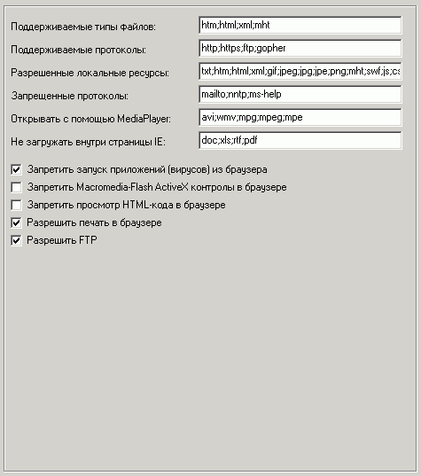

Наиболее важные опции на этой вкладке:
Поддерживаемые типы файлов
Список файлов, на которые будет установлена ассоциация браузера.
Поддерживаемые протоколы
Список протоколов, на которые будет установлена ассоциация браузера.
Разрешенные локальные ресурсы
Указывайте допустимые файлы, которые можно будет обозревать локально или же по локальной сети (но не через http и пр. протоколы).
Запрещенные протоколы
Указывайте все протоколы (без двоеточий), которые будут запрещены.
Открывать с помощью MediaPlayer
Указывайте все файлы, которые будут сразу открываться в безопасном MediaPlayer при клике на ссылке веб-страницы.
Не загружать внутри страницы IE
Не всегда бывает удобно, чтобы файлы документов открывались внутри страницы браузера. Иногда лучше, чтобы файл загружался при клике на ссылке.
Запретить запуск приложений (вирусов) из безопасного IE
Рекомендуется при посещении опасных веб-страниц.